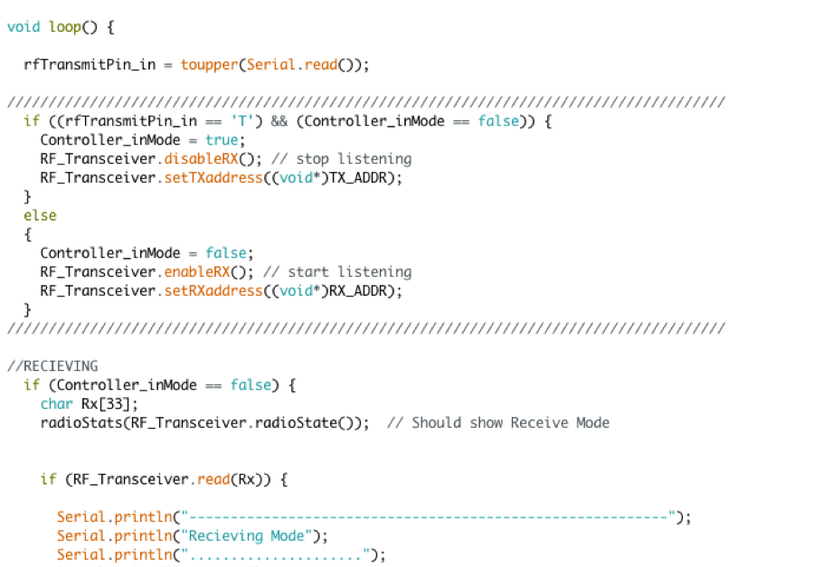
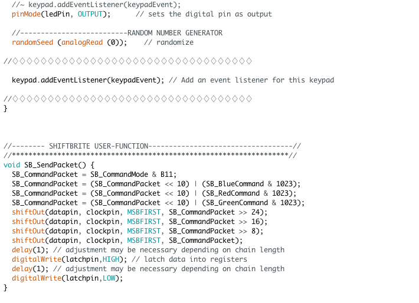

CODING PORTFOLIO
* SOME TABLES REQUIRE SCROLLING LEFT AND RIGHT TO BE SEEN
SCENARIO
With its priceless modern art pieces the Musée d'Orsay Museum in Paris, France ranks high as a must-go-see venue in the city. The museum has a perimeter intrusion detection system comprised of high-grade ultrasonic sensor devices to protect the exhibits in the museum. Each exhibit is fixed with a multitude of ultrasonic sensors connected to a sensing device, which sense the distance of visitors in proximity to the exhibits. Each sensing device is connected together in series by a one-to-many UART hardware connection design. When the ‘Slave’ devices ultrasonic sensors are tripped an alarm is set off alerting visitors to back away from the exhibit. As the zone of protection is compromised a signal is relayed to the ‘master’ device hidden away in a control room. This ‘master’ device acts as a switch aggregating data from the ‘slave’ devices setting off the cameras in the vicinity of the affected zone when the alarm is left unchecked for too long.
COMPONENTS
| MICROCONTROLLER |
|---|
| TEXAS INSTRUMENTS’ MSP432P401R LAUNCHPAD |
| COMPILER | LANGUAGE |
|---|---|
| ENERGIA v1.6.10E18 | C/C++ BASED |
| ELEMENT / COMPONENT / SENSOR | FUNCTION | SCHEMATIC | CONNECTION METHOD / PROTOCOL |
|---|---|---|---|
| MICRO-USB CABLE | UNIVERSAL SERIAL BUS: USED TO CONNECT MICROCONTROLLER TO A SOURCE OF POWER (i.e. PC) & TO PASS I/O DATA THROUGH IT | SERIAL PORT CONNECTION | |
| ULTRASONIC SENSOR - HC-SR04 | ULTRASONIC TRANSDUCER: A TRANSCEIVER THAT TRANSMITS AN ULTRASOUND SIGNAL AND THEN RECEIVES BACK THE SIGNAL CONVERTING IT INTO AN ELECTRICAL SIGNAL. BY MEASURING THE TIME BY WHICH IT TAKES TO SEND AND RECEIVE A SIGNAL THE DISTANCE OF AN OBJECT CAN BE MEASURED. |  |
PIN HEADER CONNECTION BY 4-PIN “BERGE CONNECTOR” |
| 3 PIN FEMALE/MALE 'EXTENSION' JUMPER WIRES | COMPONENT CONNECTOR |  |
PIN HEADER CONNECTION |
COMPONENT SPECS
| ULTRASONIC SENSOR - HC-SR04 | MINIMUM | TYPICAL | MAX | UNIT |
|---|---|---|---|---|
| SUPPLY VOLTAGE (VCC) | - | 5.00 | - | VDC |
| SUPPLY CURRENT (ICC) | - | 15.00 | - | mA |
| WORKING FREQUENCY | 40 | HZ | ||
| DETECTING DISTANCE | 2 | ~ | 400 | cm |
| MEASURING ANGLE | 15 | degrees | ||
| RANGING ACCURACY | 3 | mm | ||
| TRIGGER INPUT SIGNAL | 10 | μs (TTL Pulse) | ||
| ECHO OUTPUT SIGNAL | Input TTL lever signal and the range in proportion | - | ||
SCHEMATIC DIAGRAM

CODE

As the MSP432 runs the ultrasonic sensor begins to check if any object is in range of its sensors. Once an object is 2 to 400 centimeters in range of the sensor it begins to measure the distance of the object in units of centimeters. Each MSP432 board transmits the distance of their corresponding ultrasonic sensor to the adjacent board, which then receives and outputs that given distance onto its serial monitor.
SCENARIO
The 2017 Toyota Prius Gx has a mode that shows the backup and front-side cameras view on the navigation screen when parking. When these views are on the navigation screen the driver has the ability to set the screen to only show what is being viewed on the cameras or to superimpose colored onscreen guide lines onto the cameras displayed image to assist in parking. In the latter mode the distance values of objects in front and behind the car can be displayed when the driver presses down a button on the steering wheel in which the distance sensors on the outside of the car transmits its data to the navigation screen. The distance is displayed for 15 seconds until the driver presses the button again.
COMPONENTS
| MICROCONTROLLER |
|---|
| TEXAS INSTRUMENTS’ MSP432P401R LAUNCHPAD |
| COMPILER | LANGUAGE |
|---|---|
| ENERGIA v1.6.10E18 | C/C++ BASED |
| ELEMENT / COMPONENT / SENSOR | FUNCTION | SCHEMATIC | CONNECTION METHOD / PROTOCOL |
|---|---|---|---|
| MICRO-USB CABLE | UNIVERSAL SERIAL BUS: USED TO CONNECT MICROCONTROLLER TO A SOURCE OF POWER (i.e. PC) & TO PASS I/O DATA THROUGH IT | SERIAL PORT CONNECTION | |
| ULTRASONIC SENSOR - HC-SR04 | ULTRASONIC TRANSDUCER: A TRANSCEIVER THAT TRANSMITS AN ULTRASOUND SIGNAL AND THEN RECEIVES BACK THE SIGNAL CONVERTING IT INTO AN ELECTRICAL SIGNAL. BY MEASURING THE TIME BY WHICH IT TAKES TO SEND AND RECEIVE A SIGNAL THE DISTANCE OF AN OBJECT CAN BE MEASURED. | |
PIN HEADER CONNECTION BY 4-PIN “BERGE CONNECTOR” |
| NRF2401+ 2.4GHZ WIRELESS RF TRANSCEIVER MODULE | WIRELESS RF (RADIO FREQUENCY) TRANSCEIVER MODULE: TRANSMITS AND RECEIVES RADIO SIGNALS BETWEEN TWO DEVICES OPERATING ON THE 2.4GHZ ISM BAND |  |
SERIAL PERIPHERAL INTERFACE BUS (SPI) PIN HEADER CONNECTION |
| 3 PIN FEMALE/MALE 'EXTENSION' JUMPER WIRES | COMPONENT CONNECTOR | |
PIN HEADER CONNECTION |
COMPONENT SPECS
| ULTRASONIC SENSOR - HC-SR04 | MINIMUM | TYPICAL | MAX | UNIT |
|---|---|---|---|---|
| SUPPLY VOLTAGE (VCC) | - | 5.00 | - | VDC |
| SUPPLY CURRENT (ICC) | - | 15.00 | - | mA |
| WORKING FREQUENCY | 40 | HZ | ||
| DETECTING DISTANCE | 2 | ~ | 400 | cm |
| MEASURING ANGLE | 15 | degrees | ||
| RANGING ACCURACY | 3 | mm | ||
| TRIGGER INPUT SIGNAL | 10 | μs (TTL Pulse) | ||
| ECHO OUTPUT SIGNAL | Input TTL lever signal and the range in proportion | - | ||
| NRF2401+ 2.4GHZ WIRELESS RF TRANSCEIVER MODULE | MINIMUM | TYPICAL | MAX | UNIT |
|---|---|---|---|---|
| SUPPLY VOLTAGE (VCC) | 1.9 | ~ | 3.6 | VDC |
| INPUT/OUTPUT PIN WORKING VOLTAGE (ICC) (Vcc=3.3 V) | 3.3 | 5.0 | VDC | |
| TRANSMISSION RATE | +7 | dB | ||
| RECEIVING SENSITIVITY | ≤-90 | dB | ||
| TRANSMISSION RANGE (CLOSED AREA) | 50 | ~ | 60 | m |
| TRANSMISSION RANGE (OPEN AREA) | 50 | ~ | 100 | m |
SCHEMATIC DIAGRAM
CODE




As the MSP432 is running the ultrasonic distance sensor begins to check if any object is in range of its sensors. Once an object is 2 to 400 centimeters in range of the sensor it begins to pick up the signal. When one person enters a “T” on their serial monitor and sends it the ultrasonic distance sensors signal from that person’s board is then sent to the serial monitor of any MSP432 board that is in wireless distance of the NRF2401+ 2.4GHz wireless RF transceiver module. Once sent to the other person the module picks up the signal with the distance and displays the measured distance of the object from the other persons MSP432 onto their serial monitor.
SUMMARY
- Created a PIR motion sensor security system with an
Arduino Uno microcontroller which is triggered when a body
is in range of the detecting area
COMPONENTS
| MICROCONTROLLER |
|---|
| ARDUINO UNO REV3 A000066 |
| COMPILER | LANGUAGE |
|---|---|
| ARDUINO v1.6.11 | C/C++ BASED |
SCHEMATIC DIAGRAM

CODE



SUMMARY
- Using the Raspberry Pi as the main microcontroller,
in conjunction with two Arduino Uno’s, this paper proposes
a method to set an accurate and efficient, energy-saving
solution to control the temperature of a room. By acquiring
the parameters of the inside and outside temperature sensors
we can get a series of appropriate control signals to control
the heater ensuring a comfortable in temperature. This proposed
system of ours can greatly reduce energy consumption and ensure
real-time monitoring of the room while giving the end-user the
required room temperature he or she needs.
ROLES:
- Team captain of project
- Programmer:- Modeled with Raspberry Pi Zero in Python in a Linux environment
- Modeled with Arduino Uno in C/C++ environment
COMPONENTS
| MICROCONTROLLER |
|---|
| ARDUINO UNO REV3 A000066 |
| COMPILER | LANGUAGE |
|---|---|
| ARDUINO v1.6.11 | C/C++ BASED |
| MICROCONTROLLER |
|---|
| RASPBERRY PI 2B |
| COMPILER | LANGUAGE |
|---|---|
| PYTHON 3 | PYTHON |
SCHEMATIC DIAGRAMS
MICROCONTROLLER DESIGNS

WIRELESS SENSOR NETWORK (WSN) DESIGN

WIRELESS SENSOR NETWORK (WSN) ALGORITHM
DATA LOGGING
Two microcontrollers will pick up the temperature in the room from two opposing sides and then relay the averaged temperature to the third microcontroller, which will then begin to change the temperature of the room by controlling the heater using Pulse Width Modulation (PWM) modulation to vary the average power, delivered to the device. A PID control voltage will be used to set Pulse Width Modulation.
PHOTOGRAPHY PORTFOLIO


ILLUSTRATIONS PORTFOLIO
MATH WEBSITE (EXTERNAL LINK)

Math website project